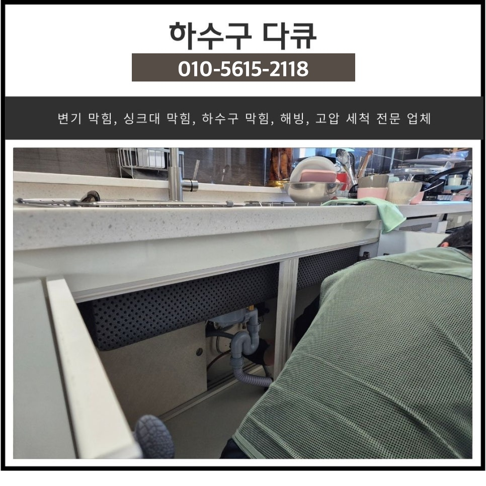
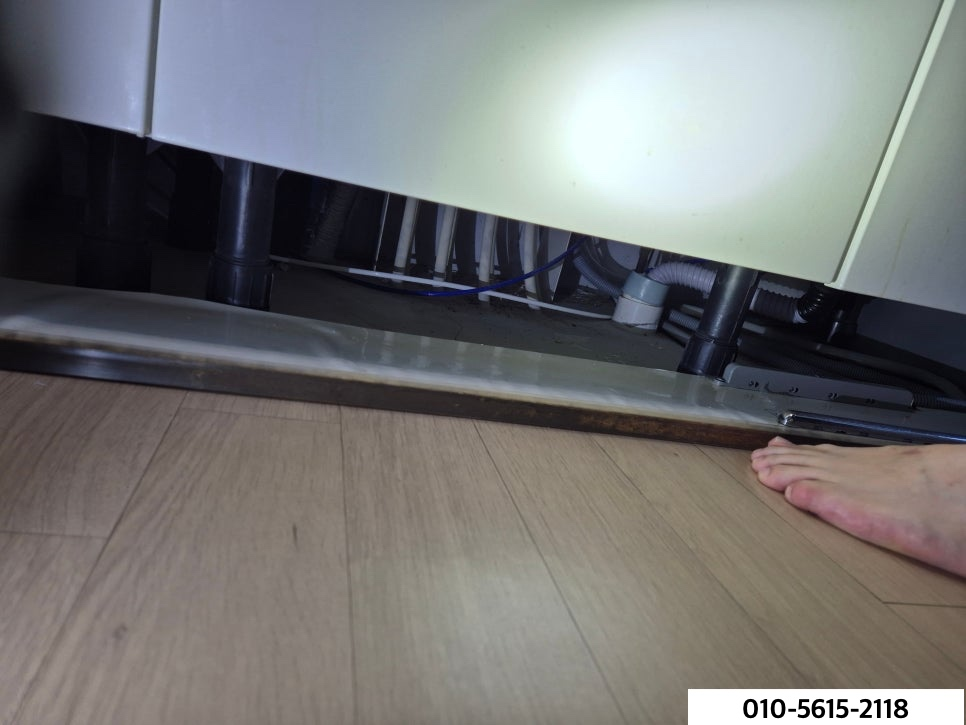
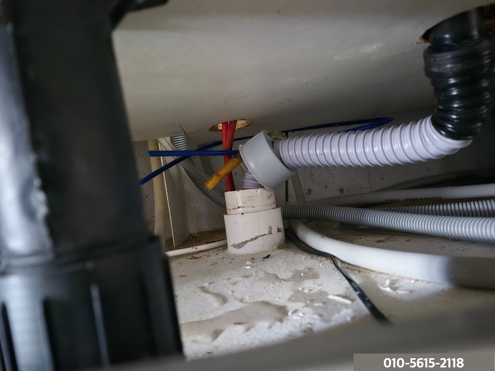
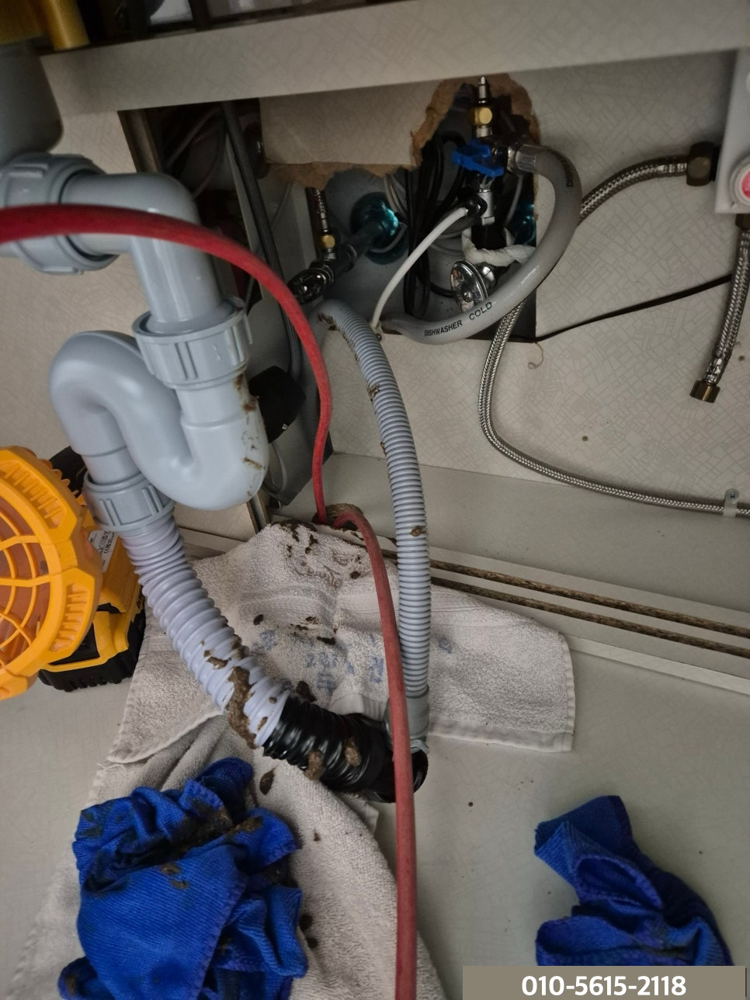
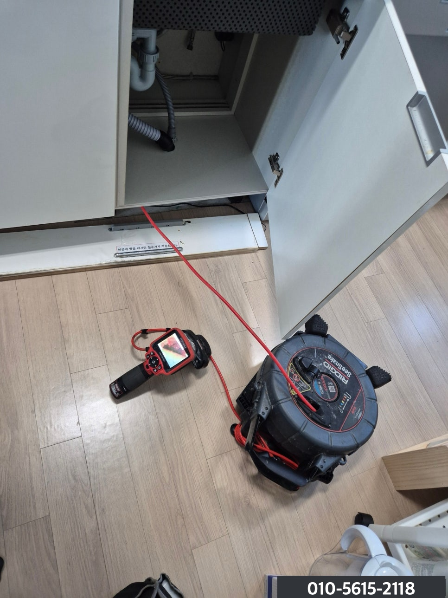
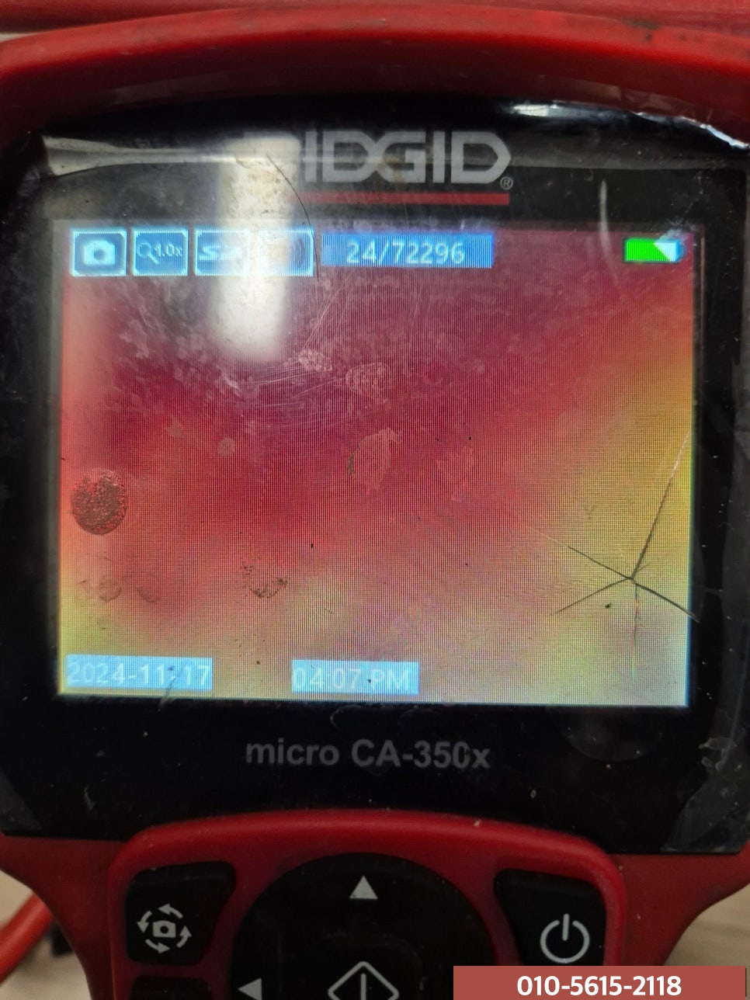
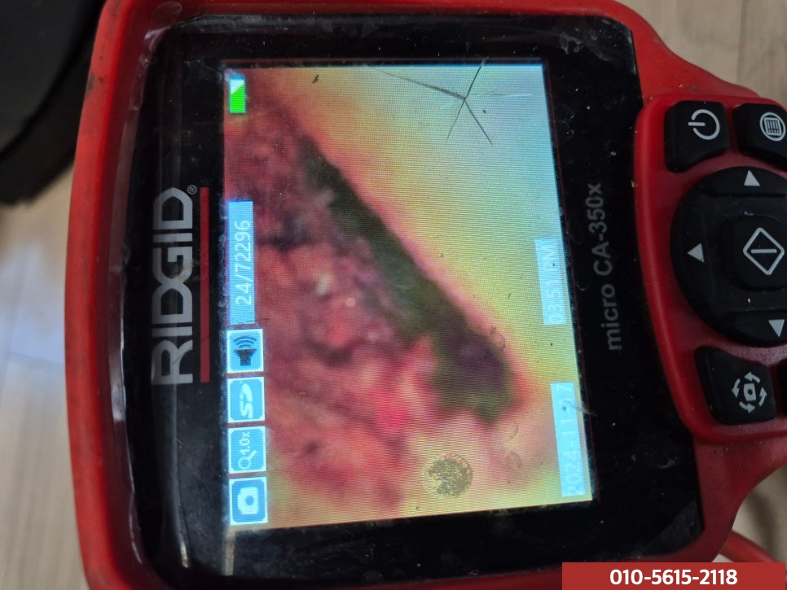

🏠 광주 오포읍 싱크대 막힘 신현동 아파트 씽크대 배관 뚫는 설비 업체
수원시 영통구 배관막힘 전문 시공 후기

📋 작업 개요
- 위치: 수원시 영통구 이의동
- 서비스 유형: 배관막힘, 고압세척, 내시경점검
- 작업 일시:
- 업체명: 하수구수사대 (010-5615-2118)
🔍 문제 상황
안녕하세요.
광주 오포읍 싱크대 막힘 신현동 아파트 씽크대 배관 뚫는 설비 업체 하수구 다큐입니다.
매일 바쁜 일상을 보내고 지친 상태로 집으로 돌아오면, 편안하게 휴식을 취하고 싶으실 텐데요.
광주 오포읍 싱크대 막힘이 발생했다면? 짜증이 날 수밖에 없습니다.
가정에서 매일 사용하는 싱크대 막힘이 발생하게 되면 음식을 만들거나 식기를 세척할 수 없는 등 다양한 불편함이 발생하는데요.
시중에서 쉽게 구할 수 있는 배관 클리너 제품들이 막힌 배관들을 모두 뚫을 수 있는 것처럼 광고를 하다 보니 직접 뚫어보시려고 시도하시는 경우가 정말 많습니다.
광주 오포읍 싱크대 막힘이 발생하기 전, 싱크대 막힘을 예방하는 차원에서 사용했다면 효과가 있을 수도 있지만 이미 막힘이 발생한 상태에서는 효과가 없는 게 사실입니다.

🔎 원인 분석
💡 전문가 진단: 현장점검
최근 신현동 아파트 씽크대 배관 뚫는 설비 업체 하수구 다큐가 다녀온 현장 역시 고객님께서 직접 해결해 보기 위해 배관 클리너를 사용해 보셨지만 문제가 해결되지 않아 연락을 주셨어요.
현장점검
고객님의 연락을 받고 현장에 도착해 주방 싱크대 점검을 시작했어요.
사진에 보이는 것처럼 싱크대와 하수구를 연결해 주는 주름 배관이 심하게 꺾여있는 것을 확인할 수 있었습니다.
이렇게 주름 배관의 꺾임이 있는 경우 싱크대에서 사용한 물이 빠르게 흘러가지 못해 이물질이 쌓일 확률이 높아요.
물이 빠르게 흘러가면서 이물질도 같이 끌고 내려가야 하는데 배수 속도가 느려지면 이물질을 끌고 가기 힘들겠죠?
배관 내부를 막고 있는 원인을 파악하기 위해 주름 배관을 분리했더니 기름 슬러지가 함께 나왔어요.
배관의 내부를 보지 않아도 어떨지 내부의 상황이 짐작되었지만 내시경 카메라를 이용해 정확히 확인해 보기로 합니다.

🔧 작업 과정
내시경 카메라가 배관에 진입하자마자 배관을 가득 메우고 있는 기름 슬러지를 확인할 수 있었어요.
워낙 많은 양의 기름 슬러지가 배관 내부를 막고 있다 보니 배관의 형태를 파악하기 어려울 정도였습니다.
신현동 아파트 씽크대 배관 뚫는 설비업체 하수구 다큐는 고객님께 배관을 막고 있는 원인에 대해 설명을 해드리고 작업 방향을 말씀드렸어요.
고객님께서도 최근 주방에서 쿰쿰한 냄새도 나고 물을 사용할 때마다 불안하고 불편하셨다며, 이물질을 모두 청소해달라고 요청하셨습니다.
신현동 아파트 씽크대 막힘 현장은 플렉스 샤프트 장비를 이용해 해결하기로 했는데요.
플렉스 샤프트 장비의 경우 노즐 끝에 달려있는 노커체인이 전동드릴의 빠르게 회전하는 힘을 전달받아 배관 내부에서 360도로 회전하며 쌓여있는 이물질을 타격해 제거하는 작업을 하게 됩니다.
하수구 다큐는 어떤 현장이던 내시경 카메라를 이용해 이물질의 위치를 정확히 파악하고 제거하고 있습니다.
일부 설비 업체들의 경우 전문적인 장비 없이 주먹구구식으로 작업을 하기 때문에 설비 업체를 선정하실 때는 기본적으로 내시경 카메라는 구비하고 있는지 확인하고 결정하시는 게 좋아요!
수차례 반복해서 작업을 진행하자 쌓여있던 기름 슬러지가 모두 제거되고 깨끗해진 배관 내부를 확인할 수 있었어요.
고객님께 내시경 카메라를 이용해 배관에 남아있는 이물질이 없는 것을 확인시켜드리고, 많은 양의 물을 한 번에 흘려보내면서 다른 문제는 없는지 꼼꼼하게 테스트 진행도 해드렸어요.
싱크대 막힘으로 연락 주셨던 고객님도 이제 걱정 없이 사용할 수 있겠다며 좋아하셔서 뿌듯했던 현장입니다.
싱크대 막힘은 언제든지 발생할 수 있는 문제입니다.


✅ 작업 완료
전문 장비를 이용해 근본적인 원인을 파악하고 해결하시는 게 가장 현명한 방법이세요.
지금 싱크대 막힘으로 고민하고 계신다면 연락 주세요.
확실하게 해결해 드리겠습니다.
경기도 수원시 영통구 봉영로 1612 7층 710-A19호




⚠️ 하수구 배관 막힘 예방 및 관리 가이드
- ✅ 머리카락, 비닐, 물티슈 등 물에 분해되지 않는 이물질은 절대 흘려보내지 마세요.
- ✅ 기름기 많은 식기는 설거지 전 키친타올로 먼저 기름때를 닦아내세요.
- ✅ 주기적으로 배수구에 뜨거운 물을 가득 부어주어 유지방 고착을 방지하세요.
- ✅ 작업 후 1년 이내 재발 시 무상 A/S 보증 서비스를 제공합니다.
💡 핵심 정리
- 확실한 장비 작업(내시경 점검 및 샤프트 스케일링)으로 원인을 뿌리 뽑습니다.
- 작업 후 1년 이내에 동일한 부위 재발 시 100% 무상 A/S 서비스를 보장합니다.
- 서울 · 경기 · 인천 전 지역에 24시간 언제든 긴급 출동할 수 있도록 항시 대기 중입니다.
❓ 자주 묻는 질문 (FAQ)
🚨 수원시 영통구 배관막힘 문제로 고민이신가요?
정확한 원인 진단과 확실한 시공으로 재발 없는 해결을 약속드립니다.
24시간 긴급 출동 | 서울 · 경기 · 인천 전지역 | 1년 내 재발 시 무상 A/S